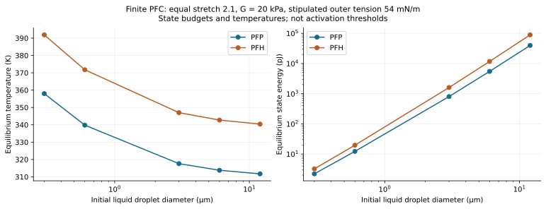
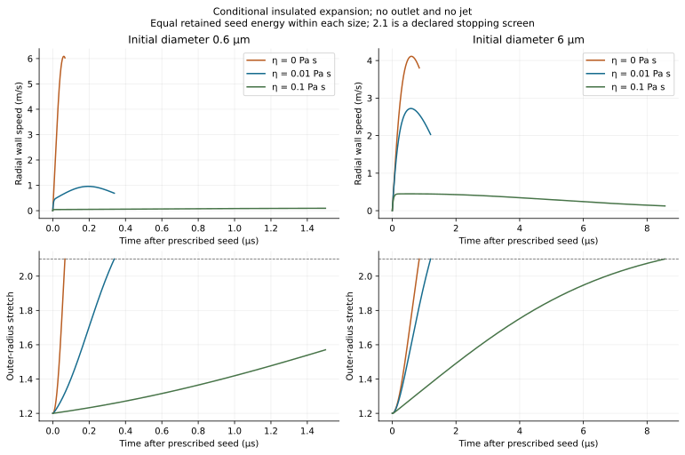
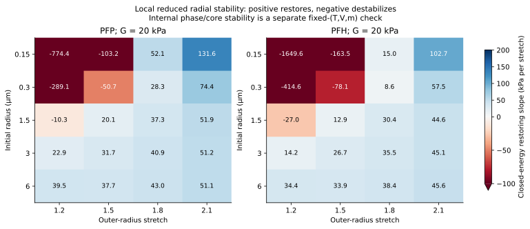
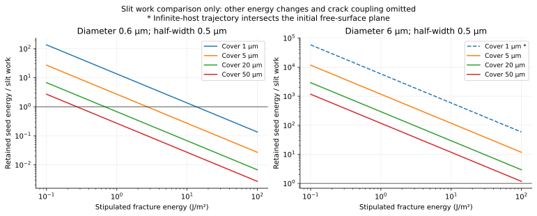

Compare a calculated phase/mechanical state
Choose among the solved equilibrium controls at stretch 2.1 and stipulated outer tension 54 mN/m. These state energies are not optical activation thresholds.
Uniform-temperature, curved-equilibrium PFC; finite mass and surviving liquid shell; infinite intact gel. No nucleation, fracture or outlet is inferred.
Embedded PFC in hydrogel: feasibility and parameter comparison
Decision: optically triggered PFC cavitation inside a hydrogel is physically feasible in published specimens. The present project completes a conditional finite-PFC feasibility study and numerical verification. It does not establish a specimen-specific laser threshold, a spontaneously opened discharge channel, a collapse jet, or an impact-pressure peak. Those outputs require the spatial models and measurements specified below.
The starting limitation was substantive: the accepted spherical ideal-gas/outlet control verifies host deformation, energy storage/loss and discharge through an already present outlet. Its matched open-gel result remains 1.625 m/s peak outlet speed and 9.143 kPa peak elastic resistance, and its sealed control expels zero liquid. These remain valid for their stated equations; they are not PFC vaporization or fracture results.
1. What has now been completed
Two separate native COMSOL 6.4 controls now contain finite real-fluid PFC mass, a vapor core, a surviving liquid shell, distinct inner/outer interfaces, and intact gel mechanics. Prescribed-radius equilibrium solves four nonlinear phase/inventory/traction conditions. The post-nucleation transient solves three mechanical/loss differential states with four thermodynamic algebraic unknowns. Native analytic Helmholtz EOS functions are compared against an independent CoolProp density-state implementation. The transient starts from a supplied seed; laser heating and nucleation are not silently replaced by an ideal-gas pressure initialization.
| Question | Current evidence | Status |
|---|---|---|
| Can a PFC droplet cavitate inside gel? | Published optical experiments in fibrin, PAAm and gelatin; PFP/PFH/PFO and several micrometre diameters | Feasible for published architectures [S1] |
| Does the new finite-PFC control conserve mass and energy? | 60 native stationary cases and six native transients compared with independent roots/integration | Numerically verified |
| Is a stationary phase root stable? | 132 radial-branch tests plus fixed-(T,V,m) internal phase/core Hessians | Constraint-specific local tests completed |
| What laser fluence activates this specimen? | Absorption, local heating, sites and activation data unavailable | Unresolved |
| Does an intact gel open a fluid-filled path? | No calibrated damage or path coupling in these controls | Unresolved |
| What exterior jet or impact pressure follows? | No outlet, directional collapse or compressible sensor model in new controls | Unresolved; emitted exterior mass is exactly zero |
S1: embedded-droplet experiments support physical feasibility, not calibration of the present equations. Their associated bubble description includes water vapor and noncondensable gas, which the new PFC-only controls omit. The complete equation derivation, definitions, limits and checks are in DERIVATION.md; the source ledger is SOURCES.md.
2. Declared parameters and comparison rules
| Input | Comparison values | Meaning |
|---|---|---|
| PFC species | PFP; PFH | Gao/CoolProp 8.0.0 real-fluid EOS [S2] |
| Initial radius / diameter | 0.15, 0.3, 1.5, 3, 6 µm / 0.3, 0.6, 3, 6, 12 µm | Initial LIQUID size, not initial gas size |
| Shear modulus | 5, 20, 100 kPa | Stipulated intact neo-Hookean controls; not measured target gel |
| Effective viscosity | 0, 0.01, 0.1 Pa s | Kelvin-Voigt controls, not target high-rate fits |
| Outer / inner tensions | Outer 54 mN/m; PFP inner 9.41, PFH inner 12 mN/m | Room-temperature reference proxies held constant; PFH outer value is stipulated [S4,S5] |
| Outer-tension sensitivity | 5, 18, 54 mN/m for PFP radius 0.3 µm | Alternative stipulated interfaces; no coating equivalence asserted |
| Initial conditions | 293.15 K, ambient 100 kPa; liquid initially at ambient + outer Laplace pressure | Absolute pressures, finite liquid mass |
| Stationary stretch | 1.2, 1.5, 1.8, 2.1 | Equal-size mechanical/phase state comparisons, not laser trajectories |
| Transient seed | Stretch 1.2, zero wall speed, liquid pressure 50 kPa above static host requirement | Conditional post-nucleation state; retained seed energy calculated |
| Stopping screens | First expansion turning, stretch 2.1, Mach 0.1 or 50 reference time scales | 2.1 is not measured rupture; domain exits are rejected/stopped |
| Host and boundaries | Density 1000 kg/m³, sound-speed screen 1500 m/s; effectively infinite undrained host | No external free surface, fracture, outlet, or mass leakage |
Equal stationary stretch compares the energies needed to occupy different equilibrium states. It does not hold laser energy fixed. The viscosity sweep holds the same retained seed energy within each size. A laser-design comparison must instead hold local incident fluence and the actual absorption law fixed. A material-response comparison should hold absorbed energy and geometry fixed. Initial seed energy is retained storage plus ambient work relative to the all-liquid reference under lossless preparation; real absorbed energy also pays pre-seed conduction, viscous and acoustic losses and may heat water/coating.
3. Size and PFC species
At stretch 2.1, shear modulus 20 kPa and the same stipulated 54 mN/m outer interface:
| PFC | Initial diameter (µm) | State temperature (K) | Equilibrium state energy | Vapor MASS fraction |
|---|---|---|---|---|
| PFP | 0.6 | 339.79 | 12.26 pJ | 20.19% |
| PFH | 0.6 | 371.74 | 19.61 pJ | 21.70% |
| PFP | 6 | 313.78 | 5.476 nJ | 9.22% |
| PFH | 6 | 342.72 | 11.703 nJ | 9.60% |

PFP requires lower state temperature and energy than PFH in these controls. The 0.6 µm inclusion has a much smaller total budget but stronger capillary confinement: its initial outer Laplace excess is 360 kPa, versus 36 kPa for 6 µm diameter. At 20 kPa modulus, the elastic-to-capillary ratio is 0.111 and 1.111, respectively. Thus reducing diameter does not simply make phase change easier. The temperature values describe curved phase-equilibrium states with finite mass; they are neither homogeneous-nucleation temperatures nor measured optical thresholds.
The surviving liquid shell matters: even after outer volume has grown by 2.1 cubed, only about 20.2% of PFP mass is vapor in the smaller reference, and about 9.2% in the larger. Modeling the entire inclusion as a pre-existing gas discards this inventory constraint and the sensible/phase energy. Bulk boiling temperature and a constant latent heat alone cannot reproduce this control.
4. Gel stiffness and interface chemistry
PFP equilibria at matched stretch 2.1 and outer tension 54 mN/m:
| Initial diameter (µm) | Shear modulus (kPa) | State temperature (K) | State energy | Elastic resistance (kPa) |
|---|---|---|---|---|
| 0.6 | 5 | 337.26 | 11.57 pJ | 7.610 |
| 0.6 | 20 | 339.79 | 12.26 pJ | 30.438 |
| 0.6 | 100 | 351.43 | 15.55 pJ | 152.191 |
| 6 | 5 | 308.97 | 4.342 nJ | 7.610 |
| 6 | 20 | 313.78 | 5.476 nJ | 30.438 |
| 6 | 100 | 332.70 | 10.226 nJ | 152.191 |
Higher shear modulus increases gel resistance and the required finite-PFC state budget. Size changes which cost dominates; modulus is relatively more influential when capillary confinement is weaker. The new 20 kPa, stretch-2.1 resistance is 30.438 kPa. It is a different state from the accepted outlet model's 9.143 kPa peak, not a correction to that result. Gel shear modulus also does not determine fracture toughness or strength; they must be measured independently.
For 0.6 µm-diameter PFP at 20 kPa modulus and stretch 2.1:
| Stipulated outer tension (mN/m) | State temperature (K) | State energy |
|---|---|---|
| 5 | 318.78 | 6.70 pJ |
| 18 | 325.42 | 8.39 pJ |
| 54 | 339.79 | 12.26 pJ |
Interface chemistry is a first-order input at the smaller size. Inner PFC liquid/vapor tension controls the core jump, whereas outer liquid/aqueous tension controls initial compression and gel traction. Published values belong to their actual interface, coating, composition and temperature. Neither a coated emulsion's low tension nor water/gas tension should be assigned to every interface. When the liquid shell disappears, a new gas/aqueous-gel interface and phase closure are needed.
5. Viscosity and radial expansion
PFP, 20 kPa shear modulus, the specified seed, and no hydraulic outlet:
| Initial diameter (µm) | Viscosity (Pa s) | Retained seed energy | Peak RADIAL speed (m/s) | End time (µs) | Endpoint |
|---|---|---|---|---|---|
| 0.6 | 0 | 13.50 pJ | 6.0888 | 0.0669 | stretch 2.1 screen |
| 0.6 | 0.01 | 13.50 pJ | 0.9596 | 0.3384 | stretch 2.1 screen |
| 0.6 | 0.1 | 13.50 pJ | 0.0957 | 1.5000 | time window ends; unfinished growth |
| 6 | 0 | 5.857 nJ | 4.1132 | 0.8470 | stretch 2.1 screen |
| 6 | 0.01 | 5.857 nJ | 2.7231 | 1.2022 | stretch 2.1 screen |
| 6 | 0.1 | 5.857 nJ | 0.4497 | 8.5620 | stretch 2.1 screen |

At viscosity 0.01 Pa s, the 0.6 µm case reaches the declared stretch screen in 0.3384 µs with 0.9596 m/s peak radial speed; the 6 µm case reaches it in 1.2022 µs with 2.7231 m/s peak radial speed. These are wall speeds, not exterior or collapse jets. All six cases have zero exterior emitted mass. The high-viscosity smaller case has not finished expansion when its 1.5 µs reporting window ends; it must not be classified as a smaller maximum bubble solely from that cutoff.
The dimensionless viscous coefficient at 0.01 Pa s is 3.333 for the smaller radius and 0.333 for the larger. Increasing viscosity slows radial growth within these matched-seed controls. It need not universally reduce velocity through an independently imposed outlet: the earlier outlet architecture can redirect energy between wall motion and discharge. Different observables and architectures require separate comparisons.
6. Equilibrium existence and stability
All 132 sampled stationary states have finite inventory, positive liquid-shell thickness, ordered phase densities and positive phase pressure-density slopes. They also pass a local internal phase/core Hessian test at fixed temperature, total volume and mass; minimum bulk-to-capillary curvature ratio is 20.4526. This does not imply nucleation accessibility or stability to all shape perturbations.
There are 36 non-restoring closed-energy radial states and 94 non-restoring fixed-temperature radial states. The thermal constraint changes the stability question. Halving the stretch perturbation changes closed-energy slopes by at most 3.205e-05 relative, with no sign changes. Hence successful phase-root convergence alone is insufficient to choose a sustainable expansion branch.

7. Laser, cover and fracture: what the budgets do and do not decide
At an illustrative local incident fluence of 20 mJ/cm² (200 J/m²), the projected-disk incident energies are 56.55 pJ and 5.655 nJ for the 0.6 and 6 µm diameters. The PFP stretch-2.1 state budgets divided by those disk energies are 0.217 and 0.968. These are required effective cross-section ratios under a lossless all-energy-to-state comparison, not measured absorption fractions or activation thresholds. A cross section divided by geometric area is not automatically bounded by one. Absorber/coating heating, depth attenuation, heterogeneous sites and preparation losses remain unknown. The published nanodroplet threshold in S7 belongs to a different diameter, formulation, temperature and exposure history.
Using a stipulated host thermal diffusivity 1.4 × 10^-7 m²/s and 5 ns pulse, the Fourier numbers are 0.00778 and 0.0000778. Small values indicate spatially confined pulse heating, not uniform PFC temperature. The activation stage therefore needs spatial heat transfer and a rate/probability model before the present equilibrium closure can be applied after a seed has formed.
The crack-work comparison sweeps cover 1/5/20/50 µm, slit half-width 0.5/1/5 µm, and toughness 0.1/1/10/100 J/m². These are hypothetical slit costs, not measured gel ranges or computed crack paths. For a 20 µm cover, 0.5 µm half-width and 1 J/m² toughness, slit work is 20 pJ. The retained seed budgets are 13.50 pJ for the smaller PFP case and 5.857 nJ for the larger. The smaller budget is below that cost if only retained seed energy is allocated; this is not a proof of fracture impossibility, because cooling, changed interface topology, prestress and other reference-subtracted energy changes can alter available work. The larger budget exceeding it likewise proves neither initiation nor a connected aperture.

Finite depth is an independent gate. Center distance to the initial free-surface plane equals radius plus cover. A 3 µm-radius droplet under 1 µm cover has an initial-plane encounter stretch of 1.333, before the 2.1 screen. Its infinite-host history cannot serve as a quantitative intact-interior prediction for that depth. The CSV records this geometry gate and standoff for every comparison; even cases not intersecting the initial plane require finite-domain convergence.
8. A concrete route to the full embedded model
| Stage | Model change | Required independent observable |
|---|---|---|
| 1. Laser and onset | Spatial absorber/PFC/water/gel heat transfer; normalized optical source; metastable liquid and calibrated heterogeneous nucleation hazard | Absorbed/local fluence and activation probability over size/fluence |
| 2. Intact expansion | Finite PFC and aqueous inventories; curved interfaces and phase-transfer heat balance; finite-depth gel dynamics; shell inertia/rate rheology when needed | Radius-time trace, displacement field, temperature/composition evidence |
| 3. Channel formation | Measured rate-dependent strength and fracture energy; cohesive/damage law; actual gap aperture, fluid filling and pressure work | Crack time/path/opening, ejection threshold versus cover |
| 4. Exterior ejection | Connected crack/outlet plus supplied liquid and exterior free surface; integrated mass, kinetic-energy and momentum flux | Emitted mass, velocity history and impulse |
| 5. Collapse and pressure | Nonspherical compressible multiphase calculation, actual boundary/receiver and sensor averaging | Resolved jet movies, hydrophone trace, location/bandwidth and impulse |
The executable development contract is in IMPLEMENTATION_HANDOFF.md, including initial/boundary conditions, proposed numerical tolerances, calibration controls and held-out comparisons. Start with one 6 µm-diameter PFP inclusion and a specified free surface as a practical micro-scale validation geometry, then retain the 0.6 µm case to expose curvature/viscosity effects. This is a proposed validation order, not an optimized droplet choice or a target recipe. Measure the actual optical absorption, high-rate gel properties, fracture toughness/strength and depth before quantitative target prediction. Damage in a solid model must be coupled to an actual fluid-filled path; an initially imposed outlet only verifies discharge after a path exists.
9. Numerical evidence and delivery
The native/reference audit passes: maximum stationary relative difference 4.516e-09, maximum normalized transient waveform difference 2.958e-05, and maximum native normalized energy residual 4.971e-09. Independent DOP853/Radau controls and tighter steps agree; thermodynamic entropy drift is checked separately from the imposed energy equation. Fresh-process native reload/refinement evidence is delivered in verification/. The independent mathematical review identified and corrected seed-energy wording, fracture-budget bounds, finite-cover applicability, branch guards, stability scope and local notation.
Open index.html for the offline reader and computed-state selector. Native models are curved equilibrium and post-nucleation intact gel. They are new files; the accepted ideal-gas/outlet models remain unchanged. The package includes runnable Java/Python sources, raw parameter/native/reference CSVs, LaTeX and printable derivation, source copies, and verification records. See README.md for reproduction commands.
Completion status: the reduced finite-PFC feasibility and parameter comparison is completed and numerically verified. The actual embedded laser-to-fracture-to-jet mechanism remains a specimen-specific spatial validation task; none of its missing mechanisms is relabelled as solved by conservation or solver agreement.
Finite-PFC embedding: full reduced-model derivation and validation gates
1. Problem, objective and scope
The question is whether a liquid PFC inclusion inside an initially intact aqueous hydrogel can absorb enough laser energy to form and expand a vapor core, what load and energy the gel receives, and what additional conditions are needed for an exterior jet or collapse-pressure prediction.
This project completes a conditional feasibility and numerical verification study. Its new solved controls contain a finite PFC mass, a concentric vapor core and surviving liquid shell, real-fluid thermodynamics, distinct interface energies, spherical gel elasticity and host viscosity. They do not start from an arbitrarily prescribed ideal-gas pocket. The transient still starts from a supplied post-nucleation seed, whose retained energy relative to the all-liquid reference is calculated. The actual laser heating and nucleation event are not inferred from that seed.
The two retained architectures are: (i) prescribed-radius curved phase equilibria and their local stability; (ii) insulated radial expansion from a prescribed seed until the first turning point, a declared intact-gel screen, or the finite time window. No outlet exists in either. The physical system has finite PFC inventory but an effectively infinite undrained gel host; radial gel inertia is retained. Liquid-shell inertia, shell temperature gradients, phase-transfer kinetics, network damage, water vapor production, gas diffusion and acoustic radiation are omitted. The pressure jump at the inner interface is quasistatic. These omissions delimit the current calculations; a small conservation residual does not remove them.
Coordinates are spherical, with increasing radial coordinate pointing outward from the inclusion center. The inclusion's outer radius and vapor-core radius are positive. Radial speed is positive during expansion. All thermodynamic pressures are absolute; gel resistance and pressure differences are signed excesses. The initially all-liquid droplet is stress-free relative to ambient except for its outer interfacial traction. At infinity, radial displacement and velocity tend to zero and stress tends to minus ambient pressure. The PFC is closed to mass exchange with the gel. No external fluid exits. The two phases share a uniform temperature and, in the controls, equal chemical potential; this is a post-activation equilibrium approximation, not nanosecond thermal homogenization.
Initial conditions for the all-liquid energy reference are room-temperature liquid PFC, its specified radius, and the initial Laplace pressure. The transient seed instead starts at 1.2 times that radius, zero radial speed, zero cumulative host dissipation and 50 kPa liquid-pressure excess over static host traction. The retained seed storage and ambient work are included. Seed preparation is assumed lossless; pre-seed viscous/acoustic losses and conducted heat are not calculated. The host law is assumed reversible until the selected stretch screen; the viscosity dissipates energy outside the PFC. A fixed 2.1 stretch limit is a declared screen, not an experimentally measured failure strain.
Governing foundations: conservation of mass; the first law; real-fluid Helmholtz constitutive functions S2; continuum surface-energy/traction assumptions; incompressible neo-Hookean and Kelvin–Voigt host assumptions; spherical radial inertia S6, S8. The finite-core/shell construction and parameter/stability comparisons below are this project's reduced model. Full mechanism validation requires independent observations of activation, radius histories, damage, exterior mass flux and pressure at a defined sensor.
2. Symbol glossary and conventions
All scalars are real. Pi is the dimensionless circle constant. Superscripts on lengths are ordinary powers; a dot denotes differentiation with time. Subscripts 0, l, v, o, i, el, amb, gel, and host label initial, liquid, vapor, outer, inner, elastic, ambient, gel and effective host quantities. A partial derivative holds the displayed conditioning variable fixed. Integrals use the stated coordinate, area, volume or time measure. Logs and exponentials act on dimensionless arguments. Ordinary arithmetic, inequalities and limits have their usual real meanings.
| Symbol | Definition and domain | Unit |
|---|---|---|
| Time since supplied seed, nonnegative | s | |
| Initial liquid-droplet radius; current outer radius; vapor-core radius; radial wall speed; , | m, m, m, m/s | |
| Initial inclusion, current inclusion, vapor-core and liquid-shell volumes | m³ | |
| Fixed PFC mass; liquid and vapor masses; vapor mass fraction | kg, kg, kg, dimensionless | |
| Uniform PFC temperature and initial liquid reference temperature | K | |
| Liquid, vapor, initial liquid and effective undrained host densities | kg/m³ | |
| Absolute liquid, vapor, ambient and initial liquid pressures | Pa | |
| Constant outer liquid/aqueous and inner liquid/gas tensions in the controls | N/m | |
| Specific Helmholtz energy, internal energy, entropy and Gibbs energy/chemical potential, each as a function of temperature and density/state | J/kg, J/kg, J/(kg K), J/kg | |
| Total PFC entropy; inner-core area; absorbed optical power; dummy time | J/K, m², W, s | |
| Phase-specific internal energies, initial liquid internal energy and phase chemical potentials | J/kg | |
| Host shear modulus and Kelvin–Voigt viscosity | Pa, Pa s | |
| Reference/current host radial coordinates; radial/circumferential stretches; reference/current radius ratio; radial-volume offset | m, m, dimensionless, dimensionless, dimensionless, m³ | |
| Elastic Cauchy stresses and incompressibility multiplier | Pa | |
| Elastic resistance, viscous resistance, and static liquid pressure required by host | Pa | |
| Host radial velocity and diagonal rates of deformation | m/s, 1/s, 1/s | |
| PFC internal energy, gel strain energy, interface-energy change, ambient work, radial host kinetic energy and cumulative host loss | J | |
| Host loss power, retained seed energy relative to all-liquid reference, and normalized energy residual | W, J, dimensionless | |
| Outer-radius stretch; small stretch perturbation; closed-energy/fixed-temperature pressure-restoration derivatives | dimensionless, dimensionless, Pa per dimensionless stretch, same | |
| Pressure, speed, time and energy normalization scales | Pa, m/s, s, J | |
| Normalized time, radial speed and accumulated loss | dimensionless | |
| Local optical fluence, effective absorption cross section, normalized pulse shape and absorbed energy | J/m², m², 1/s, J | |
| Metastable nucleus pressure driving difference; nucleus radius; nucleation free-energy change; critical radius/barrier; nucleation rate; activation probability | Pa, m, J, m, J, 1/(m³ s), dimensionless | |
| Critical fracture energy; energy release rate; potential energy; projected crack area; opening; cohesive traction; peak traction; peak-opening displacement; final separation | J/m², J/m², J, m², m, Pa, Pa, m, m | |
| Cover thickness above initial inclusion, slit half-width and illustrative fracture-work requirement | m, m, J | |
| Fixed energy label in radial stability; generic phase density and pressure | J, kg/m³, Pa | |
| Pore-pressure diffusion time and drainage length | s, m | |
| Position vector and liquid spatial domain | m, domain | |
| Vapor volume and mass coordinates; internal Helmholtz energy; phase pressure-density slopes; volume-scaled slopes; relaxed core curvature | m³, kg, J, Pa m³/kg, same, Pa/kg, same, Pa/m³ | |
| Center-to-initial-free-surface distance and initial-plane encounter stretch | m, dimensionless | |
| Sound speed; gel permeability; poroelastic modulus; pore-fluid viscosity; host thermal diffusivity; pulse duration | m/s, m², Pa, Pa s, m²/s, s |
No numerical gel modulus, viscosity, optical cross section, cover thickness, cohesive strength or fracture energy in this study is a measured value for the user's formulation. The source ledger states what interface and EOS data actually support.
3. Numbered derivation
Step 1 — Define volumes, finite phase inventory and initial reference
Symbols before Eq. (E01): are initial liquid, current outer and vapor-core radii (m), with ; are corresponding volumes (m³); pi is dimensionless. These are geometric identities for concentric spheres.
The last identity subtracts the vapor volume from the whole inclusion. The surviving liquid shell is a separate domain; neither outer volume nor core volume is a PFC mass by itself.
Symbols before Eq. (E02): are fixed total, liquid and vapor PFC masses (kg); are initial liquid and current phase densities (kg/m³); are volumes (m³); is the dimensionless vapor mass fraction. Densities and total mass are strictly positive.
The first row defines masses from EOS densities. The second imposes closed PFC inventory and divides by its positive initial mass. A root with negative shell volume or a vapor fraction outside the indicated interval is rejected, even if the nonlinear solver reports convergence.
Symbols before Eq. (E03): are initial liquid and ambient absolute pressures (Pa); is constant outer tension (N/m); is initial radius (m); is initial temperature (K); is initial liquid density (kg/m³); denotes the liquid EOS density function. The initial gel is unstretched.
The first relation adopts the spherical capillary traction at the initially liquid outer interface. The second evaluates a liquid state at that pressure, rather than using an unrelated gas density. The jump has units N/m divided by m, or Pa, and decreases with increasing radius.
Step 2 — Use a real-fluid EOS and keep both interfaces distinct
Symbols before Eq. (E04): is specific Helmholtz energy (J/kg); is temperature (K); is a generic phase density (kg/m³); are pressure (Pa), specific internal energy (J/kg), entropy (J/(kg K)), and chemical potential (J/kg). Partial derivatives are at fixed subscripted variable. These thermodynamic identities are evaluated using the adopted EOS S2.
The first row differentiates the Helmholtz representation at its stated independent variables. The second reconstructs internal and Gibbs energies. Pressure divided by density has unit J/kg, so the Gibbs expression is dimensionally consistent. Both phases use the same energy reference. No constant ideal-gas exponent or separately fitted pressure pulse appears.
Symbols before Eq. (E05): are vapor and liquid absolute pressures (Pa); are vapor and liquid chemical potentials (J/kg); is constant inner tension (N/m); is positive vapor-core radius (m); is uniform temperature (K). Equal temperature and instantaneous phase equilibrium are adopted constitutive approximations; interfaces are spherical.
The capillary relation uses the inner liquid/gas interface. Chemical equilibrium equates chemical potential at the different phase pressures; it does not replace either pressure by a flat-interface saturation value. Using 0.072 N/m water/gas tension for every interface would change the problem. A very small core also raises the capillary jump; continuum curvature and constant tension become uncertain at molecular scales.
Step 3 — Derive the intact spherical gel resistance
Symbols before Eq. (E06): are positive reference and current host radial coordinates (m); are current and initial inclusion radii (m); is the volume-offset parameter (m³); are dimensionless radial/circumferential stretches; is the radial derivative. Incompressible spherical motion and are assumed.
The first row conserves host volume between inner and any outer material sphere. The second collects constants and differentiates with respect to reference radius. Division by positive squared radius yields the third row, which verifies unit volume ratio explicitly.
Symbols before Eq. (E07): are elastic radial stress, tangential stress, incompressibility multiplier and positive shear modulus (Pa); are dimensionless stretches from Eq. (E06); is current radius (m); is spatial differentiation. This is the incompressible neo-Hookean constitutive control and elastic radial equilibrium.
The first two expressions declare the host material law. Their subtraction eliminates the unknown multiplier. The last relation is the spherically symmetric divergence of elastic stress, used to obtain the elastic traction component; inertia and viscosity are added separately below.
Symbols before Eq. (E08): is elastic wall resistance (Pa); is shear modulus (Pa); are radii (m); is dimensionless; is positive during expansion (m³); denotes definite spatial integration. Upper endpoint infinity means an effectively infinite host. At exactly , resistance follows by continuity.
Integrating Eq. (E07) with the far stress condition gives the first row. Eq. (E06) gives the variable transformation and its Jacobian. At the inner boundary the ratio is the initial/current inclusion radius; at infinity it tends to one. Factoring the numerator as the product of one minus the cube and one plus the cube permits cancellation for every finite radius in expansion; the endpoint integral has a removable limiting value. The final row evaluates both endpoints. This derivation makes the geometry assumption visible; it is not a planar-layer fracture law.
Symbols before Eq. (E09): is recoverable gel strain energy (J); is resistance (Pa); are current, initial and dummy radii (m); is shear modulus (Pa); is the radius derivative. All integrals are along the reversible intact branch.
The first row defines work as pressure times incremental cavity volume. The second substitutes Eq. (E08) and expands. Integrating each power gives the third row; evaluating the initial endpoint yields the constant in the fourth. Differentiation verifies the last identity independently and is also checked symbolically by the audit script.
Symbols before Eq. (E10): is stretch; is small dimensionless stretch excess; is resistance (Pa); is strain energy (J); is modulus (Pa); is radius (m); denotes the asymptotic remainder order as excess tends to zero.
The zero-stretch results follow by direct substitution into Eqs. (E08)–(E09). Letting the radius ratios tend to zero gives the large-stretch elastic limit. Expanding reciprocal stretch and its fourth power to first order gives the pressure expansion; integrating its product with the leading cavity-volume derivative gives the energy expansion. The large-stretch pressure limit is a property of this intact neo-Hookean model; it is not a rupture pressure for a real hydrogel.
Step 4 — Obtain host inertia and viscous dissipation
Symbols before Eq. (E11): is radial host speed (m/s); are inclusion and host radii (m); is inner-wall speed (m/s); is host density (kg/m³); is host kinetic energy (J); is spatial integration over an effectively infinite incompressible host.
Incompressibility gives the first flux relation; division by positive area gives velocity. Substituting velocity squared in kinetic energy cancels two radius powers. The antiderivative of inverse squared radius is minus inverse radius, whose far endpoint is zero and inner endpoint contributes inverse inclusion radius. This retains host inertia but omits liquid-shell inertia, which must be tested in the full spatial model.
Symbols before Eq. (E12): are host radial/tangential deformation rates (1/s); is radial speed (m/s); are radii (m); is wall speed (m/s); is effective viscosity (Pa s); is viscous-loss power (W); is viscous wall resistance (Pa). There are two equal tangential components.
Differentiate Eq. (E11) and divide its velocity by radius for the first row. Squaring and summing the three deformation-rate components yields six equal factors; the integral of inverse fourth power contributes inverse cubed radius divided by three. Dividing loss power by signed volume flux gives viscous traction when speed is nonzero; its continuous zero-speed limit avoids division by zero. Loss power stays nonnegative in either motion direction.
Symbols before Eq. (E13): are radius and speed (m, m/s); is density (kg/m³); are pressures (Pa); is outer tension (N/m); dots are time derivatives. The radial momentum equation is the adopted incompressible host approximation.
The first row collects static ambient, elastic and outer capillary resistance. The second is spherical inertia driven by the remaining traction. Dividing by positive density and radius, and substituting Eq. (E12), gives the third. Each side of the momentum equation is Pa. A positive excess traction gives positive acceleration at zero initial speed. With zero elasticity and viscosity the equation reduces to the capillary spherical-inertia control, not a directional-jet model.
Step 5 — Account for PFC internal, interface, gel, ambient and kinetic energy
Symbols before Eq. (E14): are internal energy, interface-energy change and ambient work (J); are phase masses (kg); are phase internal energies (J/kg); are distinct constant tensions (N/m); are radii (m); is ambient pressure (Pa); are inclusion volumes (m³). Initial internal energy is referenced separately below.
Internal energy includes phase conversion through the actual phase energies. Adding a second independent latent-heat term would double count it. The initial state has the outer liquid surface but no vapor core; the inner surface energy is therefore all new. Both surface terms have units N/m times m², or J. Constant tension assumes negligible interface entropy and ignores shell/coating rearrangement.
Symbols before Eq. (E15): is PFC internal energy (J); is common phase temperature (K); is total PFC entropy (J/K); are phase chemical potentials (J/kg); are masses (kg); are pressures (Pa); are phase/total volumes (m³); is constant inner tension (N/m); is core area (m²); is a differential along an admissible equilibrium trajectory.
The first row applies the thermodynamic fundamental relation to each phase and sums them. Closed mass and Eq. (E05) cancel the chemical terms; volume subtraction yields the third row. Differentiating core area and volume gives their ratio of two divided by core radius; Eq. (E05) then cancels the inner traction work with surface-energy change. The last relation explains why a curved core's interface energy belongs in the conserved total. For reversible, insulated phase adjustment, the temperature–entropy term is zero. The audit checks entropy drift without imposing an entropy equation.
Symbols before Eq. (E16): is retained seed energy relative to the all-liquid reference (J), under lossless seed preparation; is fixed PFC mass (kg); is initial liquid internal energy (J/kg); are PFC, gel, interface, ambient, kinetic and loss energies (J); are end and dummy time (s), with the prime a label; is loss power (W); is dimensionless. This is an insulated post-seed control; no later heat source or outflow exists.
The first row defines cumulative host loss. The second is the retained-seed-energy balance relative to the all-liquid reference. The last defines its numerical residual for positive retained seed energy. Equality with experimentally absorbed laser energy would additionally require accounting for pre-seed conduction, host dissipation, acoustic emission, and heat delivered to other materials. They are absent from the preparation control; the calculated budget is not an activation threshold. Gel dissipation is included as energy transferred into unrecovered host heating; it is not also fed back into PFC heat. These controls neglect heat conduction between host and PFC.
Symbols before Eq. (E17): is host kinetic energy (J); is density (kg/m³); are radius and speed (m, m/s); are pressures (Pa); is outer tension (N/m); dots indicate time derivatives. The power calculation applies along Eq. (E13).
Differentiate Eq. (E11) using the product rule and Eq. (E13)'s radius derivative. Factor the common volume flux and substitute momentum. Eq. (E09) removes elastic power, differentiation of Eq. (E14) removes ambient and outer surface power, and Eq. (E12) removes viscous power in the derivative of Eq. (E16). Eq. (E15) removes the remaining PFC/core-interface power. Thus the adopted dynamics are consistent with the stated first law. Symbolic differentiation verifies the first two rows; native/reference comparisons verify implementation, not the omitted physics.
Step 6 — Write the stationary and transient closures
Symbols before Eq. (E18): are prescribed outer/unknown core radii (m); is common unknown temperature (K); are unknown densities (kg/m³); are EOS pressure and chemical-potential functions (Pa, J/kg); is static required liquid pressure (Pa); is inner tension (N/m); are volumes (m³); is fixed mass (kg). The root must satisfy positive phase compressibility and valid inventory.
At a prescribed stretch these four equations determine temperature, densities and core radius. They establish existence of a static state, not its stability or the energy needed to cross a nucleation barrier. Energy of that state follows by Eq. (E16) with zero kinetic energy and cumulative loss. The new native stationary solver starts from slightly perturbed guesses and solves these equations; it does not merely display imported reference results.
Symbols before Eq. (E19): are three differential states (m, m/s, J); are four algebraic unknowns (K, kg/m³, kg/m³, m); are pressures (Pa); are viscosity, host density and inner tension (Pa s, kg/m³, N/m); are EOS functions; are volumes and mass; are the energies/specific reference already defined (J, J/kg). Dots are time derivatives.
The first three equations are radius, momentum and cumulative loss. Inner traction, phase equilibrium, mass and total energy supply four algebraic conditions. The native model has seven normalized Global Equations variables. The Python solver independently eliminates the four algebraic unknowns with a thermodynamic root and integrates three differential states. This is a solver-formulation comparison on the same constitutive assumptions; it is not an independent empirical theory.
Symbols before Eq. (E20): are positive pressure, speed, time and energy scales (Pa, m/s, s, J); are density, initial radius and mass; are normalized time, radius, speed and loss; are their dimensional values; are pressures/modulus/viscosity. Hats indicate dimensionless quantities, not powers.
The first two rows define scales and variables. The chain rule gives the third. Substitute dimensional radius and speed into Eq. (E13), multiply by the time/speed scale, and use the squared speed definition to divide all driving pressures by the pressure scale. The dimensionless coefficient of viscous resistance is therefore inversely proportional to initial radius at fixed viscosity and pressure scale. A square root of positive pressure/density is valid and gives speed units.
Step 7 — Test stability under the stated thermal constraint
Symbols before Eq. (E21): is stretch; is a small dimensionless perturbation; is the liquid pressure from closed total-energy phase closure with a fixed energy label (J); is static required pressure (Pa); is closed-energy pressure-restoration derivative (Pa per stretch). The center state is an admissible stationary root and the neighboring phase roots must remain admissible.
A positive derivative restores an increased radius with an inward pressure imbalance and a decreased radius with an outward imbalance. A negative value is locally unstable in this radial model. The finite-difference approximation uses 0.0001 stretch increments, repeats at half that increment, and solves phase and energy conditions again at each side. This is reduced radial-branch restoration, not proof against nonspherical perturbations or all internal phase variations; the separate core/phase Hessian test follows in Step 11. The fixed-bath derivative, denoted (same units), holds temperature instead of total energy; it describes a different experiment. Merely converging Eq. (E18) does not distinguish these thermal constraints. The reported 36 closed-energy unstable and 94 fixed-bath unstable states count the declared sampled controls.
Step 8 — Keep optical heating and nucleation as separate measurable gates
Symbols before Eq. (E22): is local fluence (J/m²); is effective absorption cross section (m²); is nonnegative pulse shape (1/s); is time (s); is absorbed power (W); is absorbed energy (J). The time integral of pulse shape is unity. Subscript abs labels absorbed energy/power, not an experimentally known coefficient.
Substitute the power expression in the energy integral and take the fixed fluence/cross section outside the integral. The normalization gives the final identity. A projected-disk comparison divides cross section by the positive area (m²); it is an effective geometric ratio, not automatically an absorption fraction bounded by one. Absorber cross section, loading, heat delivered to PFC versus water, and fluence attenuation with embedding depth must be measured. The seed's retained energy cannot replace these measurements.
Symbols before Eq. (E23): is nucleus formation free energy (J); is trial vapor-nucleus radius (m); is liquid/vapor tension (N/m); is the pressure driving difference for a metastable-liquid nucleation approximation (Pa); is critical nucleus radius (m); is critical barrier (J). This is the classical homogeneous, spherical, constant-tension approximation; it does not describe an absorber's heterogeneous nucleation site.
The first row adopts surface cost minus pressure-volume gain. Differentiate explicitly, factor, and solve the positive-radius stationary branch. The zero-radius branch is the initial boundary state, not a critical finite nucleus. The negative second derivative establishes a barrier maximum. Substituting the critical radius yields the last row. The pressure difference must be computed from the actual metastable liquid state and phase driving chemical potential, not from ambient boiling temperature alone. Nonpositive driving pressure has no positive critical radius in this approximation. Neither the heterogeneous site factor nor a kinetic prefactor is calibrated here.
Symbols before Eq. (E24): is activation probability; is a nucleation-rate density (1/(m³ s)); is liquid volume (m³); are end and dummy times (s); is local temperature (K); is liquid pressure (Pa); is spatial position (m); is the liquid domain; is volume measure (m³); exp is the exponential of a dimensionless argument. This is a Poisson-hazard hypothesis for independent nucleation events. The second equality requires a spatially uniform rate within the liquid.
The hazard integral is dimensionless and nonnegative, so probability stays between zero and one. A heterogeneous model needs a site/area hazard with corresponding units. Unresolved: the target absorber/site distribution, kinetic prefactor and temperature history. Therefore no optical activation threshold is reported as validated. Experimental activation fractions across fluence, including no-droplet/no-absorber controls, supply this gate.
Step 9 — Require fracture work and a hydraulic connection before exterior ejection
Symbols before Eq. (E25): is energy release rate (J/m²); is appropriate mechanical potential energy (J); is projected crack advance area (m²); is critical fracture energy (J/m²). The derivative is under the stated mechanical loading constraint; temperature, rate and hydration affect material toughness.
This energetic condition does not by itself determine crack initiation, path, aperture or fluid filling. The correct loading constraint matters: fixed pressure and finite closed energy have different release rates. A modulus or intact cavitation-pressure limit cannot replace toughness and strength. The new native models impose no damage law and do not claim to solve this inequality.
Symbols before Eq. (E26): is cohesive normal traction (Pa); is opening (m); is peak traction (Pa); are opening at peak and final separation (m); is fracture energy per projected crack area including both fracture faces (J/m²); is the opening measure. This is an example bilinear cohesive constitutive law, requiring calibration.
Integrate the rising linear segment as one triangle and the falling segment as the second. Their base lengths sum to final opening, so peak-opening displacement cancels from total work. Division by positive peak strength gives final separation. The relation has units J/m² divided by Pa, or m. Toughness alone cannot set peak traction or initial cohesive stiffness. Official COMSOL examples describe this implementation route S10; no target gel values are supplied here.
Symbols before Eq. (E27): is cover thickness from the initial droplet surface to the gel free surface (m); is assumed rectangular slit half-width (m); is slit projected crack area (m²); is fracture energy including both faces (J/m²); is fracture-work estimate (J); is retained seed energy (J). This idealized slit geometry and retained-seed-energy-only allocation are stipulated screens, not a computed crack path or universal fracture-energy bound.
Multiplying length by slit width gives projected area; multiplying area by toughness gives work. This compares a specified path's work with a stipulated allocation of retained seed energy. It does not prove energetic impossibility: PFC internal energy can decrease on cooling and the initial interface can release energy when topology changes. A true upper bound also requires all remaining reference-subtracted energy changes to be nonnegative, or an explicit available-energy calculation for the permitted fracture endpoints. Neither is established for a newly opened crack here. Pre-existing flaws, shorter paths, other crack widths, prestress and later heat supply also change the comparison. Passing the screen does not prove initiation, connectivity, aperture or liquid supply. Damaged material is not automatically a fluid-filled channel. Cover is varied only to compare stipulated slit costs; it is not coupled to the infinite-host trajectories. Define center-to-surface distance (m) and encounter stretch (dimensionless). Once , an interior spherical inclusion intersects the original free-surface plane. Even smaller standoff needs finite-domain convergence. For the 3 µm-radius case and 1 µm cover, encounter stretch is 1.333, before the 2.1 screen.
Step 10 — Check length/time regimes and distinguish velocities/pressures
Symbols before Eq. (E28): are shear modulus and viscosity (Pa, Pa s); is initial radius (m); is outer tension (N/m); are host density and pressure scale; is host thermal diffusivity (m²/s); is laser duration (s); are radial speed and sound speed (m/s). Each ratio below is dimensionless and applies to its stated scale.
The first compares elastic and capillary pressure scales. The second is the coefficient derived in Eq. (E20). The third is a host thermal Fourier number; a small value during a pulse means heat is spatially confined, not that the PFC is thermally uniform. The fourth screens compressible effects in radial motion. The delivered controls use a declared Mach limit of 0.1; full pressure-wave and collapse predictions require compressible spatial conservation with appropriate fluid EOS and sensor location/bandwidth.
Symbols before Eq. (E29): is a pore-pressure diffusion timescale (s); is pore-fluid viscosity (Pa s); is the relevant drainage distance (m); is permeability (m²); is poroelastic modulus (Pa). This is a dimensional poroelastic diffusion estimate; these target inputs are not measured here.
The diffusivity scale is permeability times modulus divided by fluid viscosity; dividing squared drainage length by that diffusivity gives time. Compare the event duration with this timescale before retaining an undrained host. The relevant distance is the local drainage path, not automatically the laser spot or gel thickness. Particularly for nanoscale cavities, choosing a permeability without measurement can invalidate the intact undrained approximation.
Radial wall speed, liquid velocity in a connected outlet, and an internal collapse microjet speed are different observables even though all have speed units. Source pressure, elastic resistance, dynamic pressure, pressure at a target and pressure at a finite-bandwidth sensor are also different observables. A perfectly spherical isolated model cannot generate directional jet momentum. The original 1.625 m/s outlet result cannot be reassigned to the radial speeds in this study or used as a collapse speed. A water-hammer pressure scale is not a measured peak; compressibility, contact duration, geometry and receiver response determine the actual pressure trace.
Step 11 — Check internal core/phase stability at fixed temperature, volume and mass
This is a separate local test. Fix uniform temperature (K), whole-inclusion volume (m³), and PFC mass (kg). Let (m³) and (kg) be independent vapor-volume and vapor-mass coordinates; and are liquid volume and mass. Define and (kg/m³), and (m). Let be the internal Helmholtz energy including the core surface (J), the specific Helmholtz function (J/kg), and constant tension (N/m). Outer surface, gel and ambient terms are constant at fixed outer volume.
For each phase, the fixed-temperature differential is chemical potential times mass change minus pressure times volume change. Define (J/kg) and (Pa) as phase chemical potentials and pressures; subscripts on denote partial derivatives with respect to those coordinates at fixed other coordinates. Liquid mass and volume changes are the negatives of the vapor changes. Therefore (J/kg) and (Pa). Both vanish at the adopted curved-equilibrium root.
Before Eq. (E31), define and (Pa m³/kg), and , (Pa/kg). At fixed temperature . Differentiating the phase densities gives , , , and ; their units follow from differentiating density by kg or m³.
The surface derivative uses . Positive phase pressure-density slopes make . Its units are J/kg²; mixed curvature has units Pa/kg; volume curvature has units Pa/m³. The Hessian is positive definite precisely when its Schur complement is positive. Before Eq. (E32), define as that complement (Pa/m³).
To obtain the last row, multiply the first two bulk terms by their positive common denominator. The squared and contributions cancel the matching mixed-curvature terms, leaving . Capillarity destabilizes this internal-volume variation, whereas positive bulk compressibilities stabilize it. All 132 retained roots have positive mass curvature and core complement; the minimum bulk-to-capillary ratio is 20.4526. This proves a local minimum only for internal core/phase variations at fixed . It does not establish global accessibility, nucleation probability, nonspherical stability, or full finite-depth dynamics.
4. Audit and unresolved links
The second pass checks local symbol declarations, units, equations, branch restrictions and reference alignment. Automated checks reconstruct strain-energy and kinetic-power derivatives, finite phase inventory, interface traction, chemical equilibrium, retained-seed-energy accounting, independent solver waveforms and thermodynamic entropy drift. Stability is checked separately from phase root existence. These are numerical/mathematical checks of the stated controls.
Unresolved links to the actual embedded experiment: optical energy distribution and heat delivered to PFC/water; metastable/heterogeneous nucleation and its probability; transient temperature gradients and phase-transfer rate; liquid-shell inertia; target rate-dependent gel rheology and fracture; free-surface geometry and crack fluid connectivity; water-vapor/noncondensable content; nonspherical collapse, jet breakup and resolved shock/impact pressure. The implementation handoff states the measurements and acceptance criteria needed for each. Their absence does not prevent completing the present feasibility study, but prevents declaring the full embedded mechanism physically validated.
How to complete the actual embedded-droplet mechanism
The delivered native models solve a finite-PFC phase/mechanical screen. The sequence below defines the additional work and measurable acceptance gates needed to make a specimen-specific embedded-droplet model predictive. Each gate has a distinct observable; agreement with a gas/outlet control cannot substitute for it.
A. Fix the specimen and observable
Record PFC species/purity, radius distribution explicitly as radius or diameter, shell chemistry/thickness, absorber type/loading/cross section, gel formulation/hydration, inclusion center depth and cover thickness, gel thickness/support conditions, surrounding liquid/air and initial temperature. Measure the laser wavelength, pulse shape, local fluence and focal spot at the specimen. Specify the desired output: activation probability, radius history, intact gel load, channel creation, exterior emitted mass/impulse, internal collapse jet, or pressure at a sensor.
Use the 6 µm-diameter PFP inclusion and a single free surface as the first spatial geometry if the sample is not yet fixed. This matches one published size class and keeps curvature corrections smaller than in a nanodroplet; it is a practical validation choice, not a demonstrated optimum. Retain a 0.6 µm-diameter case as the curvature/viscous comparison. The current calculations use 20 kPa shear modulus and 0.01 Pa s viscosity only as controls. Do not identify a reported Young's modulus with shear modulus; for an approximately incompressible small-strain material, divide Young's modulus by approximately three after checking the measurement convention.
B. Resolve laser heating and activation first
Build spatial heat transfer for absorber, PFC, coating and aqueous gel, with heat-source normalization such that the integral of deposited power equals the measured absorbed energy. A spatially confined pulse requires local temperature, not a uniform-droplet temperature assumption. Resolve the absorber's thermal contact or represent it with a calibrated heat-transfer source. The PFC/gel boundary passes heat; the far thermal boundary starts at the measured ambient temperature. Verify the source integral and sensible heating against an analytic constant-property control, then refine the spatial/time grid around the absorber and pulse.
Before vaporization, retain a metastable liquid state where physically meaningful. Use a calibrated heterogeneous nucleation hazard with absorber/site geometry and the actual liquid pressure. Compare activation/no-activation fractions over fluence using no-absorber, no-droplet and liquid-water controls. A successful phase-equilibrium root is not an activation event. Neither ambient boiling temperature nor a conditioned population's threshold supplies a single-droplet target threshold.
Required evidence: pulse-energy/source normalization error below 0.5%; activation probability versus fluence and size; repeatability and uncertainty; local temperature or an independently supported absorber heat model. These numerical tolerances are proposed project criteria, not universal accuracy standards. A minimum of three distinct fluences around onset is a screening experiment, not enough by itself to establish a reliable probability distribution.
C. Couple finite phase inventory to prefracture mechanics
Start with one nucleated inclusion and an intact host. Preserve separate PFC liquid/vapor inventories and, if heating creates water vapor, a separate aqueous-vapor inventory. Use the real-fluid EOS for PFC and consistent energy references. Resolve interface curvature, phase-transfer kinetics and the latent enthalpy flux in the interfacial heat balance. Do not add latent heat again if already included by an enthalpy/internal-energy formulation. Include liquid-shell inertia and thermal gradients when their omission changes the radius history.
For early growth far from external boundaries, compare with the delivered spherical core/shell control under its exact insulated/equilibrium assumptions. Then add finite-depth 2D axisymmetric gel and fluid domains, finite deformation, appropriate dynamic viscoelasticity and moving interfaces. Axisymmetry is conditional on observed geometry. Use a finite outer-domain convergence check, stress-free/free-surface or measured support conditions, and explicitly represent pore-fluid drainage if the undrained timescale screen fails. Keep radius forcing and pressure forcing separate; imposing both measured radius and an arbitrary pressure history overconstrains the mechanics.
Required evidence: mass residual below 0.1%, total-energy residual below 1%; mesh/time/domain refinement changing maximum radius, event time and defined load by less than 2%; radius-versus-time and displacement-field agreement on held-out laser energies/gel formulations. Acceptance against measurements must incorporate their uncertainty; a provisional 10% radius or timing target is meaningful only when the observations are more precise than that. Fit absorber energy and gel viscosity with multiple independent observables so they cannot compensate silently for each other.
D. Add fracture and a fluid-filled path
Measure high-rate gel strength, failure behavior and fracture energy at the relevant hydration and temperature. If the path is observed in advance, a calibrated cohesive law on that path is economical. If the path is unknown, use a tensile-driven damage/fracture model with a justified regularization length and crack-path validation. COMSOL's damage documentation and cohesive example describe available solid-mechanics routes; license/module availability must be checked on the actual installation.
Decide how a crack becomes a fluid domain. A soft/damaged solid element does not automatically become a liquid channel. A cohesive gap needs aperture, contact, pressure loading and fluid filling; a diffuse fracture description needs a coupled permeability/aperture or a consistently remeshed fluid region. Demonstrate that changing this coupling does not create or destroy mass or add unaccounted pressure work. A fixed ALE mesh cannot simply change topology when an initially intact ligament opens. Prescribing a channel from the start tests the pre-channel control, not channel formation.
Required evidence: crack initiation time/location, opening/path to free surface, measured threshold for exterior ejection, fracture-energy accounting, and mesh/regularization convergence. Calibrate on one cover thickness and predict a different thickness. Include an intact sealed control, a deliberately pre-opened channel control and a tougher-gel control. Keep cover thickness, crack width and fracture energy as separate inputs; modulus does not determine toughness.
E. Resolve exterior ejection, collapse and sensor pressure
Once a hydraulic connection exists, solve exterior liquid supply, actual aperture and free surface. Integrate outlet mass flux, kinetic-energy flux and momentum flux over time. Compare expelled mass and impulse rather than deriving them from a peak-speed ratio. Follow gas/liquid composition as the liquid PFC shell vanishes; the resulting gas/aqueous-gel interface has a different law. Include receiver geometry and jet breakup if transfer success is the output.
Internal collapse jets require nonspherical geometry and compressible multiphase fluid conservation. Spherical radial motion cannot predict their direction or tip speed. Start with a water bubble near a known boundary as a jet benchmark, then a specified gas/gel boundary, then the actual PFC/water-vapor mixture and damaged geometry. Resolve acoustic propagation and the actual sensor/receiver point and averaging interval. Use an appropriate equation of state, physical damping/radiation boundary and a shock-capable numerical method. A dynamic-pressure scale or water-hammer scale is not a resolved impact peak.
Required evidence: high-speed shape/jet movies, collapse time, hydrophone/receiver location, bandwidth and impulse, pressure-trace convergence with mesh/time/bandwidth, and comparison against held-out cases. A singular incompressible collapse-pressure extrapolation fails this gate regardless of conservation of the earlier expansion control.
F. Parameter program and deliverable contract
Sweep size, PFC species, outer/inner interface chemistry, local optical fluence/absorption, gel dynamic modulus/viscosity, cover thickness, fracture strength/toughness, pore permeability and gas content. Use one-factor screens to identify regimes, then a structured interaction design for the dominant terms. Hold absorbed energy fixed for a mechanical material comparison; hold incident fluence and actual absorption law fixed for an optical design comparison. These are different experiments. Propagate measured input intervals to output intervals and report excluded branches and failed solves.
Freeze calibration inputs before the held-out comparisons. Deliver the solved spatial model, source/parameter ledger, source-energy integral, complete phase/mass/energy accounting, native exports, independent numerical controls, convergence evidence and a clear list of measured versus assumed quantities. Only after gates B–E pass for the target architecture can the full embedded PFC mechanism be labelled validated.
Sources and claim boundaries
Primary and official sources were checked on 2026-10-11. Calculated comparison values in this project are original conditional results, not measurements from these sources.
| ID | Source | What it supports; what it does not establish |
|---|---|---|
| S1 | Abeid, Fabiilli, Aliabouzar and Estrada (2024), Experimental & numerical investigations of ultra-high-speed dynamics of optically induced droplet cavitation in soft materials; author manuscript | Experiments with PFC droplets embedded in fibrin, polyacrylamide and gelatin establish physical feasibility of optically triggered droplet cavitation. PFP/PFH/PFO and 3/6/12 µm diameters were compared. The apparatus uses single 532 nm, 4 ns pulses; its quoted 1.3–1.8 mJ apparatus pulse energy is not absorbed energy in one droplet. The associated bubble model includes water vapor and noncondensable gas. This is not validation of this project's PFC-only equilibrium control, an exterior jet, or the user's formulation. |
| S2 | Gao et al. (2021), Equations of State for the Thermodynamic Properties of n-Perfluorobutane, n-Perfluoropentane, and n-Perfluorohexane; official PFP implementation, PFH implementation | Helmholtz real-fluid EOS used for pressure, internal energy and chemical potential. Archived CoolProp 8.0.0 coefficient JSONs are bundled. EOS functions do not supply optical absorption, nucleation rates, gel properties, fracture energy, or an interface law. |
| S3 | NIST Chemistry WebBook, perfluoropentane | Molecular mass 288.0343 g/mol; compiled boiling temperatures 302.6–303.2 K; standard vaporization enthalpy entries 26.6 and 27.5 kJ/mol. These are bulk reference quantities, not nanodroplet activation temperatures or constant latent heats for every modeled state. |
| S4 | Kandadai (2010), Rheology and interfacial tension of biopolymers, author dissertation, printed pp. 113–119, Tables 5.2–5.3; related article | Room-temperature PFP/saturated-air tension 9.41 mN/m and PFP/distilled-water tension 54 mN/m. Used as distinct inner/outer constant controls. Neither is measured high-temperature PFP/gel surface stress. |
| S5 | Acoustic Droplet Vaporization of Perfluorohexane Emulsions Induced by Heterogeneous Nucleation at 1.1 MHz, Table 2 and nucleation discussion | PFH liquid/gas reference tension 12 ± 2 mN/m at 20 °C; emphasizes distinct interfaces and heterogeneous nucleation. PFH uses the same stipulated 54 mN/m outer tension as PFP here to make a controlled EOS comparison; that assignment is not a PFH/gel measurement. |
| S6 | Luo et al. (2020), Laser cavitation rheology for measurement of elastic moduli and failure strain within hydrogels | Bubble-radius measurements combined with a viscoelastic bubble model can identify modulus and failure strains. Supports measuring dynamic properties in the relevant regime. It does not justify equating a target gel's quasi-static modulus with high-rate properties or calling stretch 2.1 universal rupture. |
| S7 | Zhao et al. (2023), Factors Influencing the Repeated Transient Optical Droplet Vaporization Threshold and Lifetimes of Phase Change, Perfluorocarbon Nanodroplets | Optical activation depends on formulation and exposure. The earlier project's approximate 18.6 mJ/cm² threshold concerns a conditioned population with about 309 nm diameter at 0 °C, 1064 nm/5 ns and PAAm. It cannot calibrate a single unconditioned 300 nm-radius inclusion at room temperature. |
| S8 | Brennen (1995), Cavitation and Bubble Dynamics, Chapter 2 | Spherical inertia, bubble thermodynamics and limits of incompressible bubble descriptions. A spherical equation cannot produce a directional collapse jet or a resolved shock-pressure history. |
| S9 | COMSOL 6.4, Damage, Damage Models | Hyperelastic phase-field damage and fracture-energy/length-scale inputs exist in appropriate licensed products. A damage field alone does not define an open, fluid-filled hydraulic path. |
| S10 | COMSOL 6.4, Mixed-Mode Debonding of a Laminated Composite | Official cohesive traction–separation example and Adhesion/Decohesion setup under Interior Contact. It is a software implementation reference, not a gel-specific calibration or validation. |
The prior source-context file is copied as sources/prior_interface_evidence.md. This public edition links scholarly papers to their original repositories or DOI pages; third-party paper PDFs and operational logs are excluded. Archived EOS coefficients, the worked derivation, model/data files and scientific audit records are bundled. The printable PDF preserves the accepted local study and its original source ledger; this page and PUBLICATION.md describe the public package contents.